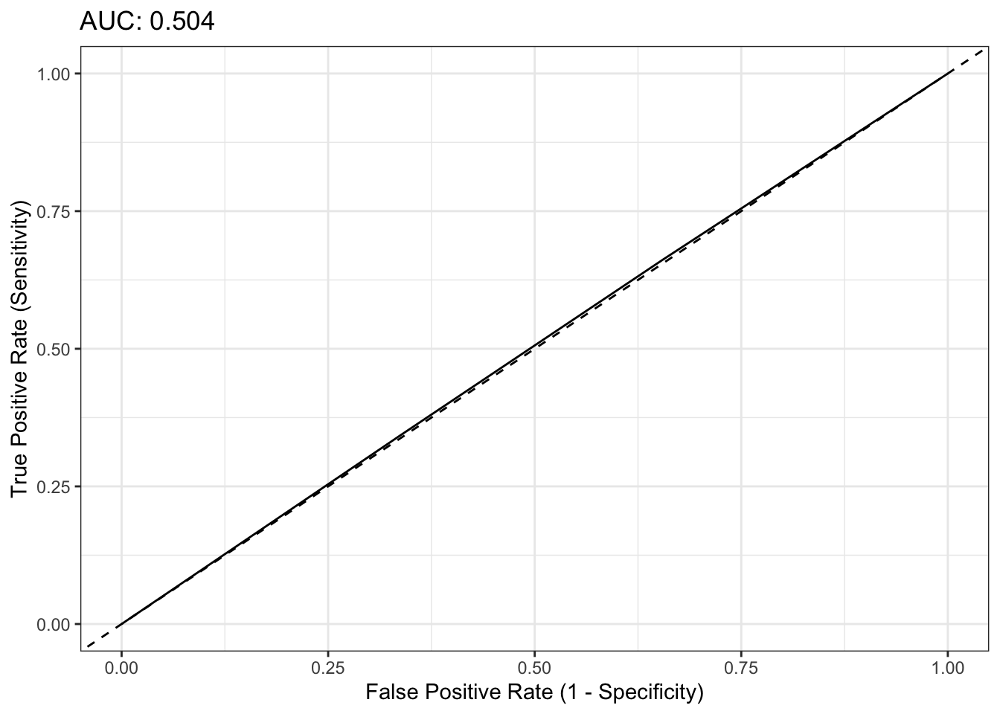
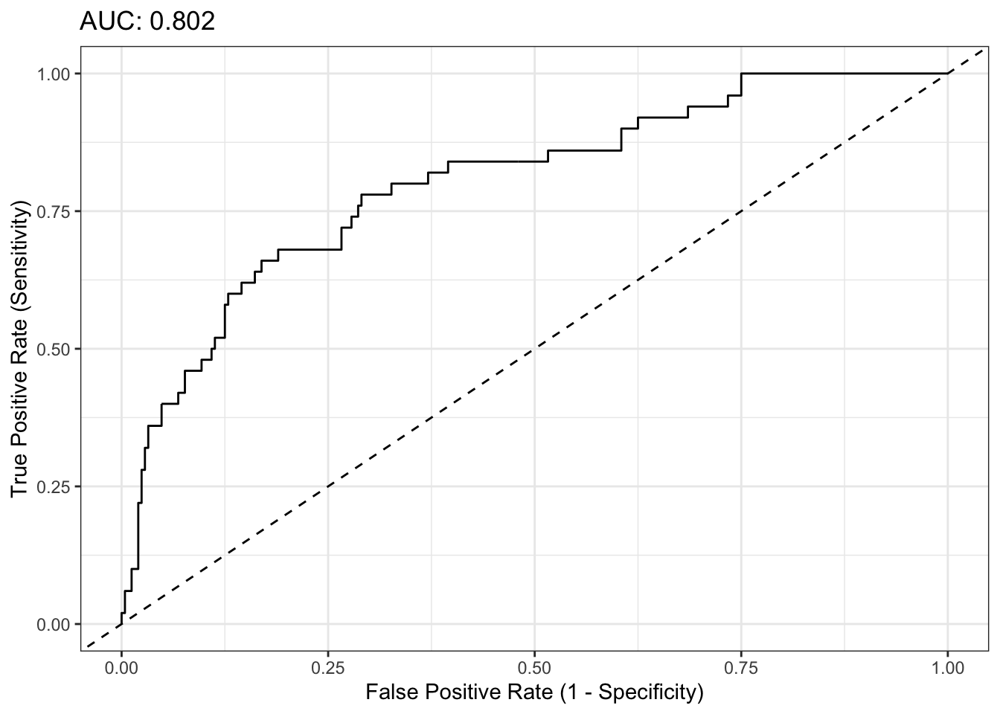
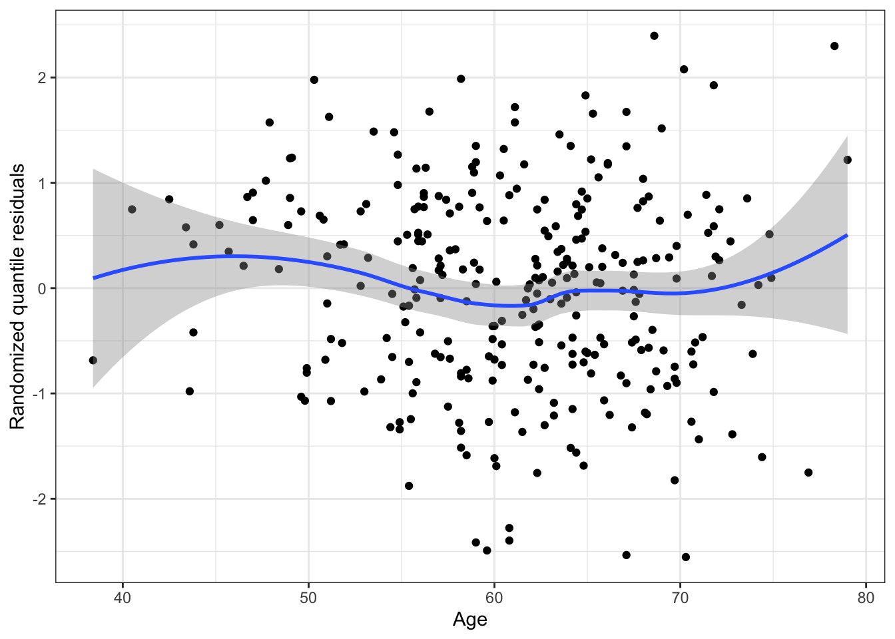
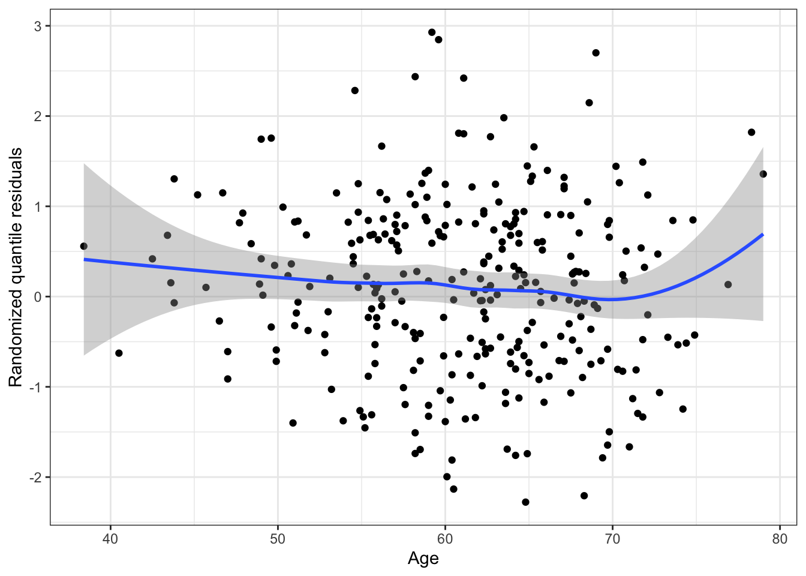
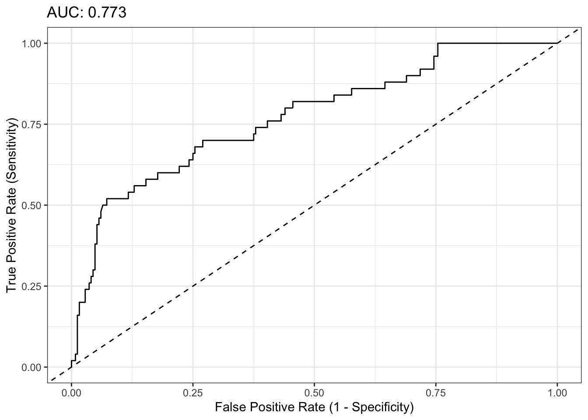
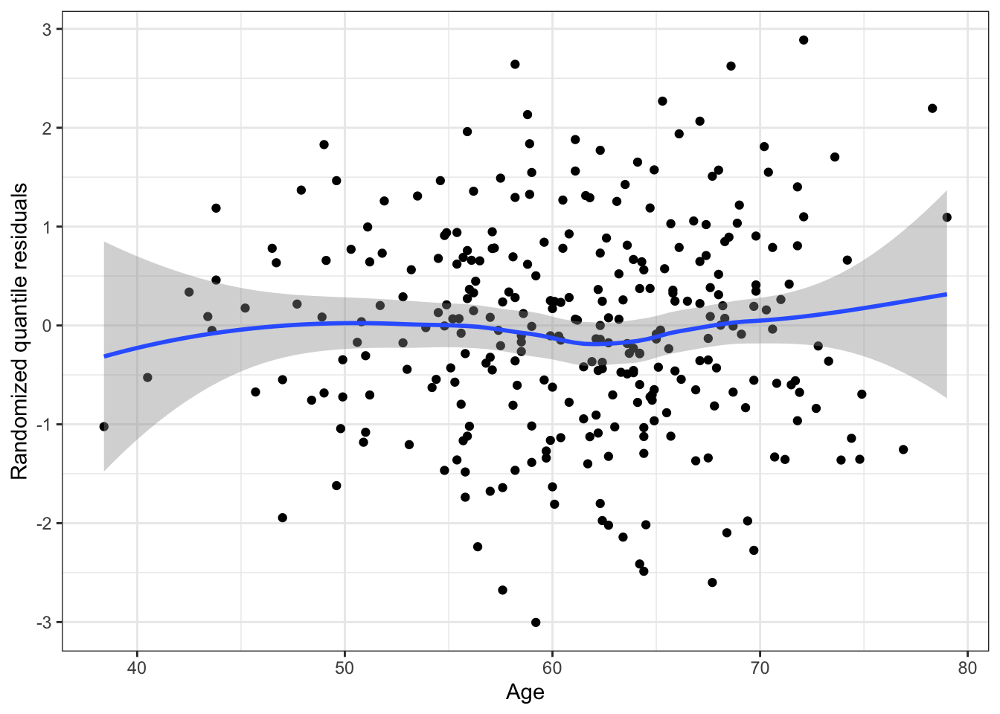
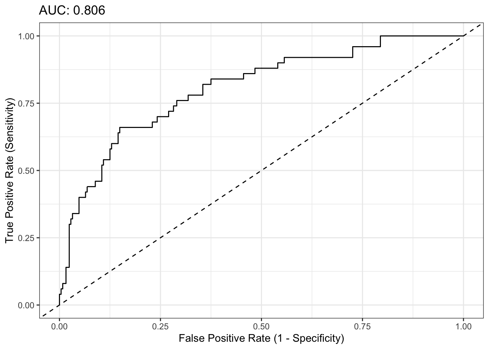
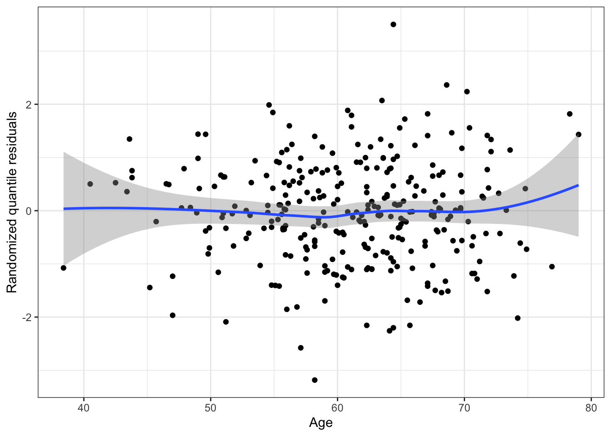
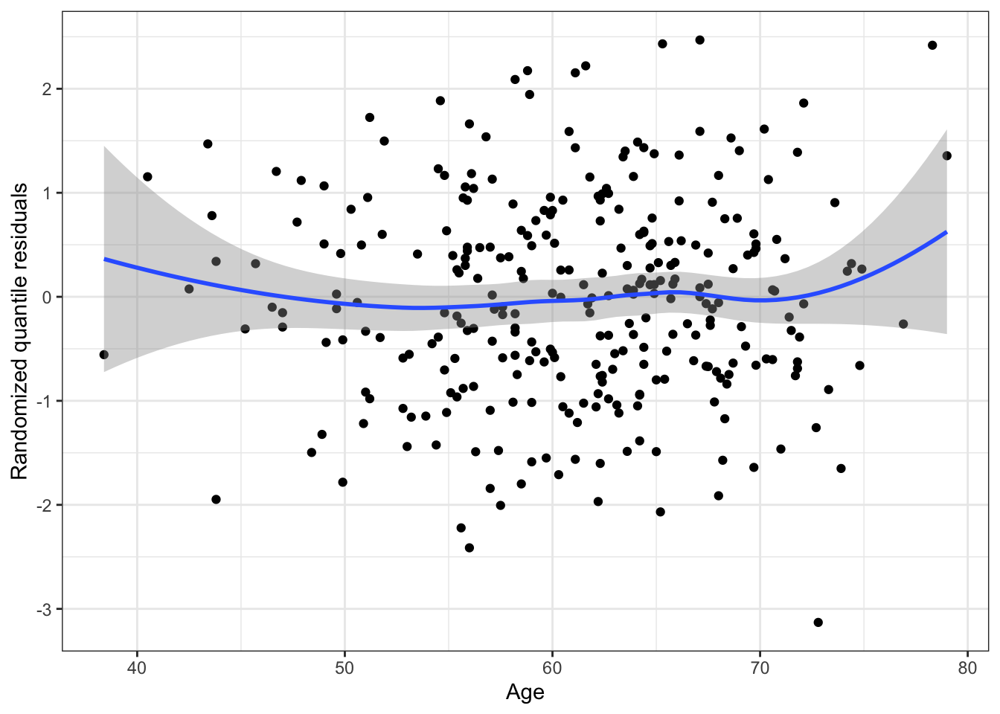

# A tibble: 2 × 8
RBC.Age.Group FamHx TVol T.Stage sGS OrganConfined PreopTherapy Age
<fct> <dbl> <dbl> <fct> <fct> <dbl> <dbl> <dbl>
1 2 0 1 1 2 1 0 62.2
2 3 0 3 2 1 0 1 60.1Exam 1 Review: Data Analysis
Blood transfusions in prostatectomies
A radical prostatectomy is a one treatment for prostate cancer, in which the prostate is completely removed. However, it is still possible for cancer to return after surgery, and researchers are interested in understanding what factors are related to cancer recurrence.
One possible factor is related to the blood transfusions some patients received during surgery. Here we examine data from a study investigating whether the age of the transfused blood is related to cancer recurrence.
We have data on 298 patients with prostate cancer, who received a blood transfusion during prostatectomy surgery. The patients were then followed for 5 years after surgery to check whether cancer returned.
Research question: Is the risk of recurrence related to the age of blood transfused?
Information provided:
- Below is a description of the data
- At the end of this document is an Appendix which contains EDA and output for six different regression models
Data
Each observation is one patient, and we have the following variables:
RBC.Age.Group: Red blood cell (RBC) storage duration, grouped (1 = less than 13 days, 2 = 13-18 days, 3 = more than 18 days)Age: Patient age (years)FamHx: 1 if patient has family history of prostate cancerTVol: Tumor volume (1 = low, 2 = medium, 3 = extensive)T.Stage: Clinical T category, a measure of the stage of cancer, estimated before surgery. 1 = stages T1-T2a, indicating tumor can’t be felt or seen in imaging, or is felt/seen in half of only one side of the prostate. 2 = stages T2b-T3, indicating tumor is felt/seen in more than half of one side, is in both sides, or has spread outside the prostate.sGS: Surgical Gleason score, discretized. Based on examination of the tumor removed in surgery. 1 = not assigned, 2 = no disease or score 0-6, 3 = score 7, 4 = score 8-10.OrganConfined: 1 if cancer is limited to the prostate gland, 0 if it has spread outside itPreopTherapy: Whether the patient received cancer treatment prior to surgery (1 = yes, 0 = no)Recurrence: Whether the prostate cancer recurred within 5 years (1 = yes, 0 = no)
Questions
You notice that there is cancer recurrence for 50 out of the 298 patients in the data (about 17%). Concerned about class imbalance, a colleague suggests down-sampling the data so you have 50 patients with recurrence and 50 patients without recurrence. Comment on your colleague’s suggestion.
Explain why the estimated coefficient for
PreopTherapyin Model 2 isNA.Explain how you would assess whether any deviations in the quantile residual plots shown in the appendix are due to model mis-specification, or do to chance.
Model and interpretation
Choose one of the six models in the appendix to investigate the research question, and explain your choice.
For your chosen model, interpret (in terms of the odds) the estimated coefficients in the fitted model that are relevant to the research question.
Probabilities
Two patients receive a prostatectomy at the hospital. Here are there characteristics:
Using your chosen model, estimate the probability of recurrence for Patient 1 (the first row).
Explain how you would create a 95% confidence interval for the difference in probabilities (\(p_1 - p_2\)) for these two patients.
AIC
Compute the AIC for your chosen model, then explain the purpose of the penalty term in the AIC. For your chosen model, do you think the AIC will be a good estimate of prediction error on new data?
If AIC is an approximation to LOOCV, what is the benefit of calculating AIC instead of computing the LOOCV error? Is there a scenario in which LOOCV would give a better estimate than AIC?
Addressing the research question
- Using information in the Appendix, address the main research question: Is the risk of recurrence related to the age of blood transfused?
Model selection
Your colleague decides they want to build the best predictive model for prostate cancer recurrence. To do so, they use best subset selection:
prostate_bss <- bestglm::bestglm(prostate, binomial, "AIC")prostate_bss$BestModel$coefficients(Intercept) FamHx TVol sGS2 sGS3 sGS4
-2.5021681 -0.7256918 0.9538321 -1.8748844 -1.6466275 0.1399150 prostate_bss$BestModel$aic[1] 227.946- Is the AIC from their chosen model a good estimate of prediction error on new data? Explain why or why not. If not, explain what you would do differently.
Appendix
EDA
table("PreopTherapy" = prostate$PreopTherapy,
"T.Stage" = prostate$T.Stage) T.Stage
PreopTherapy 1 2
0 239 21
1 25 13table("PreopTherapy" = prostate$PreopTherapy,
"RBC.Age.Group" = prostate$RBC.Age.Group) RBC.Age.Group
PreopTherapy 1 2 3
0 87 83 90
1 13 12 13table("PreopTherapy" = prostate$PreopTherapy,
"sGS" = prostate$sGS) sGS
PreopTherapy 1 2 3 4
0 0 74 165 21
1 38 0 0 0table("T.Stage" = prostate$T.Stage,
"sGS" = prostate$sGS) sGS
T.Stage 1 2 3 4
1 25 73 153 13
2 13 1 12 8table("T.Stage" = prostate$T.Stage,
"Recurrence" = prostate$Recurrence) Recurrence
T.Stage 0 1
1 228 36
2 20 14table("sGS" = prostate$sGS,
"Recurrence" = prostate$Recurrence) Recurrence
sGS 0 1
1 22 16
2 70 4
3 146 19
4 10 11table("PreopTherapy" = prostate$PreopTherapy,
"Recurrence" = prostate$Recurrence) Recurrence
PreopTherapy 0 1
0 226 34
1 22 16table("RBC.Age.Group" = prostate$RBC.Age.Group,
"Recurrence" = prostate$Recurrence) Recurrence
RBC.Age.Group 0 1
1 83 17
2 79 16
3 86 17Model 1
m1 <- glm(Recurrence ~ RBC.Age.Group,
data = prostate, family = binomial)Coefficients:
Estimate Std. Error z value Pr(>|z|)
(Intercept) -1.58563 0.26621 -5.956 2.58e-09 ***
RBC.Age.Group2 -0.01123 0.38213 -0.029 0.977
RBC.Age.Group3 -0.03551 0.37592 -0.094 0.925
---
Null deviance: 269.6 on 297 degrees of freedom
Residual deviance: 269.6 on 295 degrees of freedomsummary(cooks.distance(m1)) Min. 1st Qu. Median Mean 3rd Qu. Max.
0.0006523 0.0006523 0.0006966 0.0034244 0.0007258 0.0176951 
Model 2
m2 <- glm(Recurrence ~ Age + FamHx + TVol +
T.Stage + sGS + OrganConfined + PreopTherapy,
data = prostate, family = binomial)Coefficients: (1 not defined because of singularities)
Estimate Std. Error z value Pr(>|z|)
(Intercept) -3.86924 1.94159 -1.993 0.046282 *
Age 0.02247 0.02485 0.904 0.365870
FamHx -0.70464 0.50433 -1.397 0.162357
TVol 0.94633 0.33536 2.822 0.004775 **
T.Stage2 0.22313 0.49228 0.453 0.650359
sGS2 -1.76486 0.67266 -2.624 0.008698 **
sGS3 -1.62246 0.45640 -3.555 0.000378 ***
sGS4 0.06700 0.58596 0.114 0.908964
OrganConfined -0.10317 0.42280 -0.244 0.807216
PreopTherapy NA NA NA NA
---
Null deviance: 269.60 on 297 degrees of freedom
Residual deviance: 214.68 on 289 degrees of freedomvif(m2)Error in vif.default(m2): there are aliased coefficients in the model

Model 3
m3 <- glm(Recurrence ~ Age + FamHx + TVol +
T.Stage + sGS + OrganConfined,
data = prostate, family = binomial)Coefficients:
Estimate Std. Error z value Pr(>|z|)
(Intercept) -3.86924 1.94159 -1.993 0.046282 *
Age 0.02247 0.02485 0.904 0.365870
FamHx -0.70464 0.50433 -1.397 0.162357
TVol 0.94633 0.33536 2.822 0.004775 **
T.Stage2 0.22313 0.49228 0.453 0.650359
sGS2 -1.76486 0.67266 -2.624 0.008698 **
sGS3 -1.62246 0.45640 -3.555 0.000378 ***
sGS4 0.06700 0.58596 0.114 0.908964
OrganConfined -0.10317 0.42280 -0.244 0.807216
---
Null deviance: 269.60 on 297 degrees of freedom
Residual deviance: 214.68 on 289 degrees of freedomvif(m3) GVIF Df GVIF^(1/(2*Df))
Age 1.085904 1 1.042067
FamHx 1.012417 1 1.006190
TVol 1.477437 1 1.215499
T.Stage 1.295279 1 1.138103
sGS 1.418423 3 1.059988
OrganConfined 1.464285 1 1.210076summary(cooks.distance(m3)) Min. 1st Qu. Median Mean 3rd Qu. Max.
1.105e-05 9.908e-05 2.261e-04 3.816e-03 2.814e-03 4.949e-02 

Model 4
m4 <- glm(Recurrence ~ Age + FamHx + TVol +
T.Stage + OrganConfined + PreopTherapy,
data = prostate, family = binomial)Coefficients:
Estimate Std. Error z value Pr(>|z|)
(Intercept) -5.42836 1.89960 -2.858 0.004268 **
Age 0.02268 0.02423 0.936 0.349458
FamHx -0.74231 0.49418 -1.502 0.133069
TVol 1.05048 0.31201 3.367 0.000761 ***
T.Stage2 0.49969 0.46883 1.066 0.286502
OrganConfined -0.29664 0.39876 -0.744 0.456934
PreopTherapy 1.26632 0.42659 2.968 0.002993 **
---
Null deviance: 269.60 on 297 degrees of freedom
Residual deviance: 224.61 on 291 degrees of freedomvif(m4) Age FamHx TVol T.Stage OrganConfined
1.068933 1.010977 1.309346 1.231369 1.370228
PreopTherapy
1.084896 summary(cooks.distance(m4)) Min. 1st Qu. Median Mean 3rd Qu. Max.
1.322e-05 1.011e-04 3.374e-04 3.626e-03 2.577e-03 4.258e-02 

Model 5
m5 <- glm(Recurrence ~ RBC.Age.Group + Age + FamHx + TVol +
T.Stage + sGS + OrganConfined,
data = prostate, family = binomial)Coefficients:
Estimate Std. Error z value Pr(>|z|)
(Intercept) -3.76899 1.95529 -1.928 0.053906 .
RBC.Age.Group2 -0.26255 0.44710 -0.587 0.557054
RBC.Age.Group3 -0.05067 0.42376 -0.120 0.904827
Age 0.02231 0.02480 0.900 0.368321
FamHx -0.73249 0.50957 -1.437 0.150586
TVol 0.95973 0.33682 2.849 0.004381 **
T.Stage2 0.18375 0.49428 0.372 0.710084
sGS2 -1.75729 0.67202 -2.615 0.008924 **
sGS3 -1.65830 0.46131 -3.595 0.000325 ***
sGS4 0.10114 0.58826 0.172 0.863495
OrganConfined -0.10616 0.42456 -0.250 0.802550
---
Null deviance: 269.6 on 297 degrees of freedom
Residual deviance: 214.3 on 287 degrees of freedomvif(m5) GVIF Df GVIF^(1/(2*Df))
RBC.Age.Group 1.097809 2 1.023603
Age 1.089409 1 1.043747
FamHx 1.021548 1 1.010717
TVol 1.485033 1 1.218619
T.Stage 1.313787 1 1.146206
sGS 1.520916 3 1.072385
OrganConfined 1.476090 1 1.214944summary(cooks.distance(m5)) Min. 1st Qu. Median Mean 3rd Qu. Max.
7.329e-06 1.028e-04 2.433e-04 3.910e-03 2.712e-03 4.783e-02 

Model 6
m6 <- glm(Recurrence ~ RBC.Age.Group + Age + FamHx + TVol +
T.Stage + OrganConfined + PreopTherapy,
data = prostate, family = binomial)Coefficients:
Estimate Std. Error z value Pr(>|z|)
(Intercept) -5.47574 1.91965 -2.852 0.004338 **
RBC.Age.Group2 0.02383 0.42083 0.057 0.954838
RBC.Age.Group3 0.10768 0.41326 0.261 0.794434
Age 0.02284 0.02426 0.941 0.346546
FamHx -0.74786 0.49664 -1.506 0.132114
TVol 1.05090 0.31234 3.365 0.000767 ***
T.Stage2 0.49533 0.47216 1.049 0.294151
OrganConfined -0.30559 0.40045 -0.763 0.445393
PreopTherapy 1.26455 0.42748 2.958 0.003095 **
---
Null deviance: 269.60 on 297 degrees of freedom
Residual deviance: 224.53 on 289 degrees of freedomvif(m6) GVIF Df GVIF^(1/(2*Df))
RBC.Age.Group 1.033156 2 1.008188
Age 1.070200 1 1.034505
FamHx 1.017783 1 1.008852
TVol 1.311995 1 1.145423
T.Stage 1.246090 1 1.116284
OrganConfined 1.381172 1 1.175233
PreopTherapy 1.087140 1 1.042660summary(cooks.distance(m6)) Min. 1st Qu. Median Mean 3rd Qu. Max.
0.0000107 0.0001294 0.0003864 0.0036969 0.0024477 0.0416174 